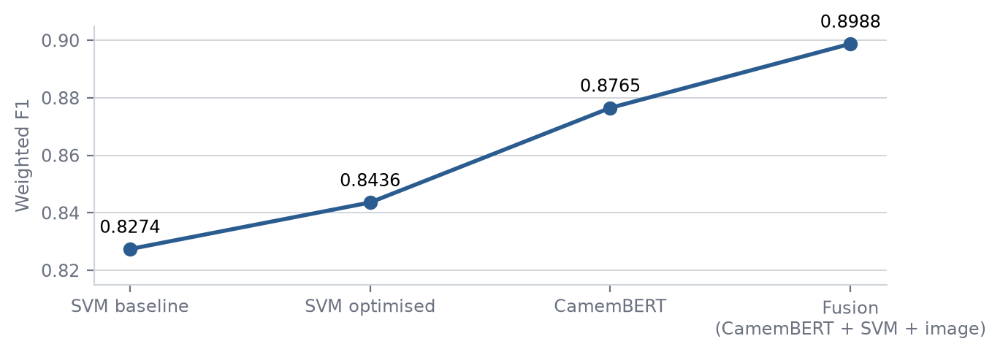
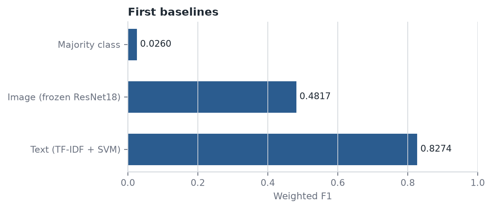
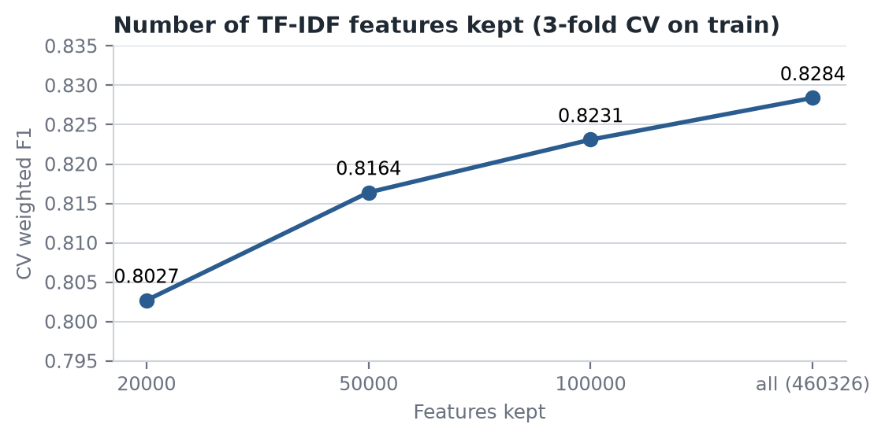
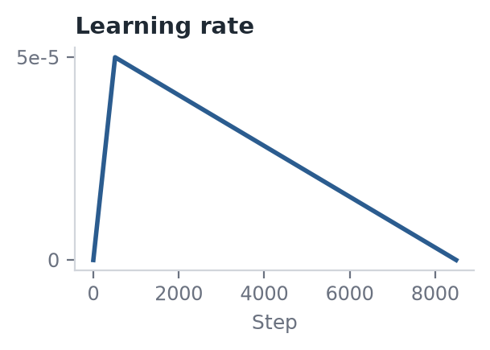
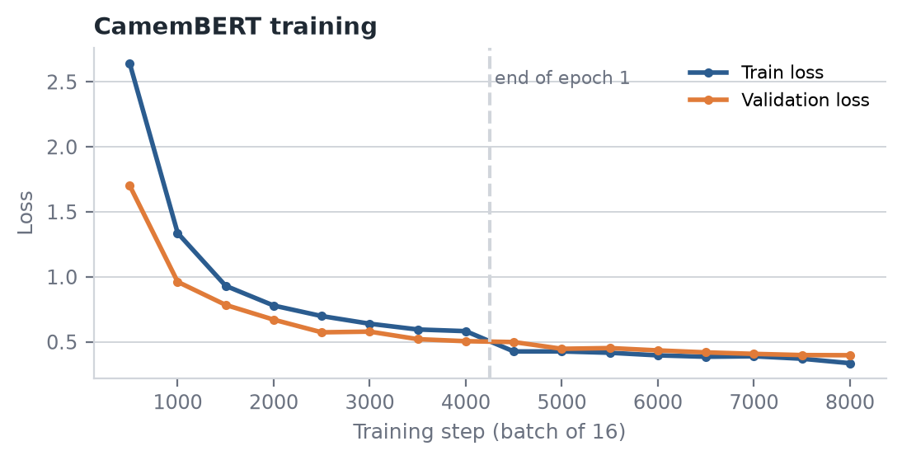
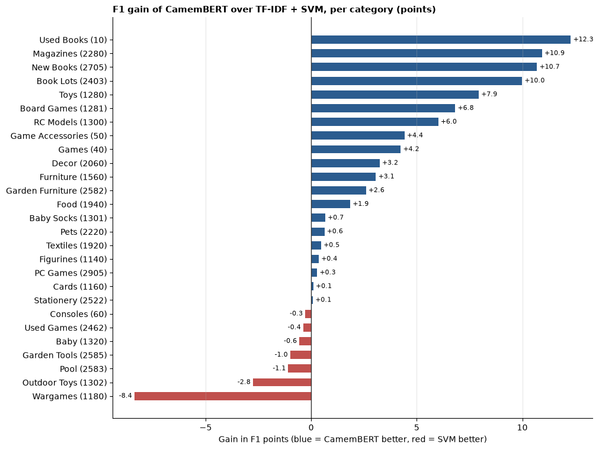
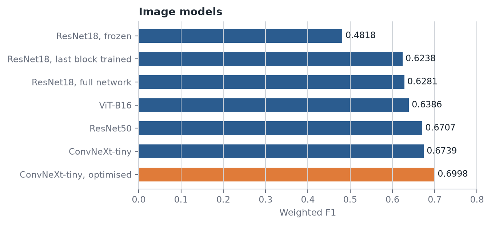
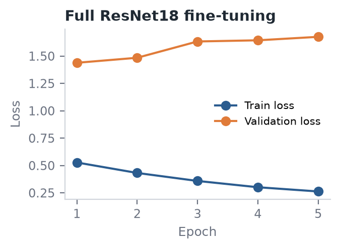

PROJECT STORY
Rakuten product classification
Classify 84916 products into 27 categories from their title, description and image.
All scores are weighted F1 on the same 16984 validation products.
Best model: a Random Forest that combines CamemBERT, a TF-IDF SVM and an image model,
with 0.8988 weighted F1. Text carries most of the signal; images help on books.
The final pipeline
Title + description
>TF-IDF + SVM
27 probabilities
Title + description
>CamemBERT
27 probabilities
Product image
>ConvNeXt-tiny
27 probabilities
81 probabilities
>Random Forest
>Category (F1 0.8988)
How the score improved

Contents
| 1. Data audit | 2. Preprocessing and shared split | 3. Baselines |
| 4. Text optimisation | 5. CamemBERT | 6. Image models |
| 7. Fusion | 8. Interpretability | 9. Conclusions |
STEP 1 1 OCT
Data audit
The text is rich but messy, and the categories are unbalanced. We score with weighted F1
and also report macro F1.
What we found
- 84916 products, 27 categories, each with a title, an optional description and one image.
- 35% of products have no description. 18% of descriptions contain HTML.
- The largest category (2583, pool) has 12% of products, the smallest (1180) 0.9%: 13 times less.
- Category codes have no names. We named them by reading product titles.
Concept: weighted vs macro F1. F1 combines precision (how many predicted
products are right) and recall (how many true products are found). Weighted F1 averages the 27
category scores weighted by their size: it is the challenge metric. Macro F1 gives every category
the same weight, so it shows if small categories are ignored.
Examiner questions
Why not accuracy?
With unbalanced categories, a model can ignore small ones and still look good. F1 per category, averaged, makes this visible.
Is the imbalance a problem for training?
Not much here: the smallest category still has 764 products. We check it with macro F1 and per-category F1 instead of re-sampling.
STEP 2 8 OCT
Preprocessing and a shared split
Every model is scored on the same 16984 validation products. Without this, text, image and
fusion scores could not be compared or combined.
Text
- HTML removed, text lowercased.
- Title and description joined into one text.
Images
- Duplicate images found by comparing a hash (fingerprint) of each file.
- 5620 duplicate or conflicting images removed from train only.
Split
- One stratified 80/20 split: 67932 train, 16984 validation, saved to a file.
- Stratified means each category has the same share in both parts.
Concept: why validation must stay untouched. The validation set plays the role
of new, unseen products. If we clean it, remove rows from it, or tune settings on it, its score becomes too
optimistic. So all cleaning that removes products is done on train only.
84916 products
>Train 67932
(cleaned)
>Validation 16984
(kept complete)
The mentor found that an early version of the image cleaning also removed 551 validation
products. This was fixed: the image model now uses the same 16984 products as text.
Examiner questions
Why keep duplicate images in validation?
At test time every product needs a prediction, duplicate or not. Validation must look like the real test.
Did the text cleaning help?
No: 0.8276 on raw text against 0.8274 on clean text. We measured it instead of assuming it. TF-IDF already gives little weight to rare HTML tags.
STEP 3.1 15 OCT
Baselines
Text is far stronger than images. A simple TF-IDF + SVM already reaches 0.83, the image model
0.48.
Concept: TF-IDF. Each product becomes a long list of numbers, one per word or
word pair. A word gets a high value if it appears in this product but is rare overall (piscine),
and a low value if it appears everywhere (pour).
Concept: linear SVM. For each category, the model learns one weight per word.
A product's score for a category is the sum of its word values times the weights. The highest score wins.

Two ideas did not clearly help: cleaning the text (0.8276 raw, 0.8274 clean) and binary
TF-IDF with 50000 features (+0.33 on average over 5 splits, while the score moves 0.71 between splits).
Examiner questions
Is 0.83 better than the official benchmark (0.8113)?
Not directly comparable: the benchmark is a CNN on titles only, scored on Rakuten's hidden test set. Our reference is our own baseline on our validation.
Where does the SVM fail?
36% of errors have a margin under 0.20: the model hesitated between two categories. 7 of the 10 most confused pairs are book categories.
STEP 3.2 29 OCT
Optimisation of the text model
Using all words instead of 50000 and tuning with cross-validation on train: 0.8313 to 0.8436.
Concept: 3-fold cross-validation. Train is cut into 3 parts. The model trains
on 2 and is tested on the third, 3 times. The average is used to choose settings, so validation is never
used for choices.
round 1
round 2
round 3
blue: train, orange: test
Concept: C in the SVM. C sets how strictly the SVM fits the training data.
Small C gives a simpler model (strong regularisation), large C fits every training product, including noise.

The 50000 limit kept only the most frequent words and dropped 89% of them, including rare
but useful ones such as brand or model names.
Examiner questions
Was validation used to choose settings?
No. Feature limit, binary and C were chosen with 3-fold CV on train. Validation was scored once at the end.
Why keep binary TF-IDF now?
With all features its gain (0.50 points) is larger than the CV spread (0.30). We set this rule before looking at the result.
Why LinearSVC and not Logistic Regression?
2 points better in CV, and still trains in seconds.
STEP 3.3 5 NOV
Deep learning for text: CamemBERT
CamemBERT reads words in context and reaches 0.8765, +3.4 points over the SVM.
The largest gains are on the book categories.
Concept: transformer and fine-tuning. CamemBERT is a transformer pre-trained on
a large amount of French text, so it already knows French. Each word is read together with the words around
it, so lot de 5 tomes and lot de jardin are understood differently. Fine-tuning adds a small
layer for our 27 categories and trains the whole model a little more on our products.
| Setting | Value |
|---|
| Input | title + description, 128 tokens |
| Epochs, batch size | 2, 16 |
| Optimiser | AdamW, learning rate 0.00005 |
| Regularisation | weight decay 0.01, dropout 0.1 |
| Stability | warmup, linear decay, gradient clipping 1.0 |


Validation loss keeps falling in both epochs (0.501, then 0.427): no overfitting. In epoch 2 train loss drops a little below it, as each product is seen a second time.

Examiner questions
Why no cross-validation for CamemBERT?
One training run takes about 2 hours on our laptop. We used the standard settings and tuned nothing, so validation only measures the result.
Why is it better than TF-IDF?
TF-IDF loses word order and context. Book titles share the same words (tome, édition) but not the same context.
STEP 3.3 5 NOV
Image models
Images alone are weak (0.48 frozen, 0.70 with ConvNeXt), but their errors differ from text.
Concept: frozen vs fine-tuned network. A pre-trained image network already
recognises shapes and objects. Frozen: only the last layer is trained, fast but limited.
Fine-tuned: deeper layers are also trained, so the network adapts to product photos.


When the whole network is trained, train loss keeps falling but validation loss rises after
epoch 1: the model starts to memorise the training images.
Examiner questions
Why was train loss higher than validation loss for the frozen model?
Train loss is averaged over the epoch while the model is still learning, and validation loss is measured at the end. With one epoch this gap is expected.
Why use a model that only scores 0.48 to 0.70?
Because it fails on different products than text. Combined, it fixes text errors, mainly on books.
STEP 3.3 5 NOV
Fusion: combining text and image
A Random Forest that learns how to combine the models beats any single model:
0.8988.
SVM
27 probs
>CamemBERT
27 probs
>Image
27 probs
>Random Forest
81 inputs
>Category
Concept: stacking. Each model gives 27 probabilities per product. A second model,
here a Random Forest, takes these 81 numbers as input and learns when to trust which model, for example
"for books, listen to the image more".
Concept: Random Forest. It trains 300 decision trees on random samples and lets
them vote (bagging). We also tried Gradient Boosting (trees trained one after another, each fixing the previous
errors): slightly lower and much slower.
Concept: calibration. An SVM gives scores, not probabilities. Calibration learns
on the training data how to turn these scores into probabilities, so they can be combined with the other
models.
Examiner questions
Is the fusion score optimistic?
No. The Random Forest is scored with 5-fold cross-validation on the validation products: every product is predicted by a model that never saw it.
Why keep the SVM if CamemBERT is better?
They make different errors: CamemBERT reads context, the SVM catches rare exact words. Wargames, CamemBERT's weakest category, gains 7.8 points when both are combined.
STEP 3.3 5 NOV
Interpretability
The text model mostly uses sensible product words, but it also learned seller names and
writing style.
Concept: reading the SVM weights. A linear SVM has one weight per word and
category. The highest weights show which words push a product toward a category.
- Clear words: piscine for pool, chien for pets, warhammer for wargames.
- Seller names: sweetheart93, germenly. This works on this data but may not on new sellers.
- Writing style: new books use summary words (cet ouvrage), used books often have English or
German titles.
- Short titles with no book word (la promenade au parc) give the model nothing to decide with.
Examiner questions
Can the model be trusted on new sellers?
Partly. Part of its score comes from seller names. It should be monitored on new sellers and retrained regularly.